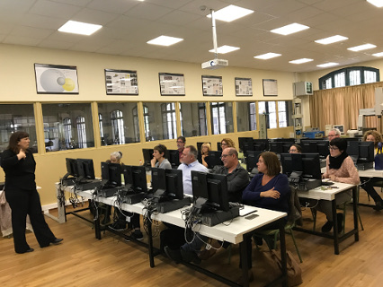

El pasado viernes, 5 de mayo, en el Institut Escola del Treball de Barcelona se realizó una primera acción formativa, de 5 horas de duración, para los centros asociados de Barcelona que quisieron asistir. La finalidad de la jornada es incrementar los centros que utilizan este recurso que la Asociación FPempresa pone a su disposición y, también, poner en valor lo que puede suponer para los centros y las empresas de su àrea de influencia una buena gestión de su bolsa de empleo (ventajas para los alumnos, para las empresas y para el posicionamiento de los centros de formación profesional)
Durante toda la mañana, 13 representantes de 8 centros diferentes de Barcelona exploraron las posibilidades del portal "Emplea FP" mediante la presentación de Lorena Fernández, que atendió además todas la dudas y preguntas que se le hicieron.
Gracias a Lorena y a los diferentes representantes de los institutos: Anna Gironella, Salvador Seguí, Escola d'Hosteleria i Turisme, Escola del Treball, Poblenou, Vall d'Hebron, Joan Brossa i Camps Blancs (Sant Boi de Llobregat) por su participación activa en la jornada.
Agradecemos también la organización y la acogida de los compañeros del Institut Escola del Treball de Barcelona.
